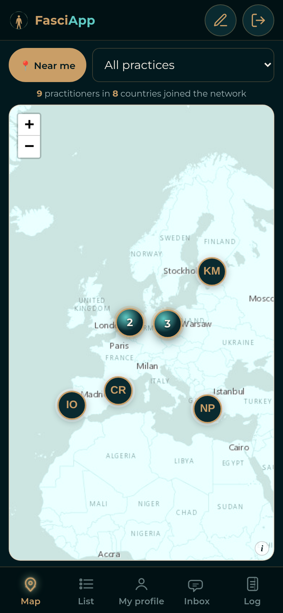
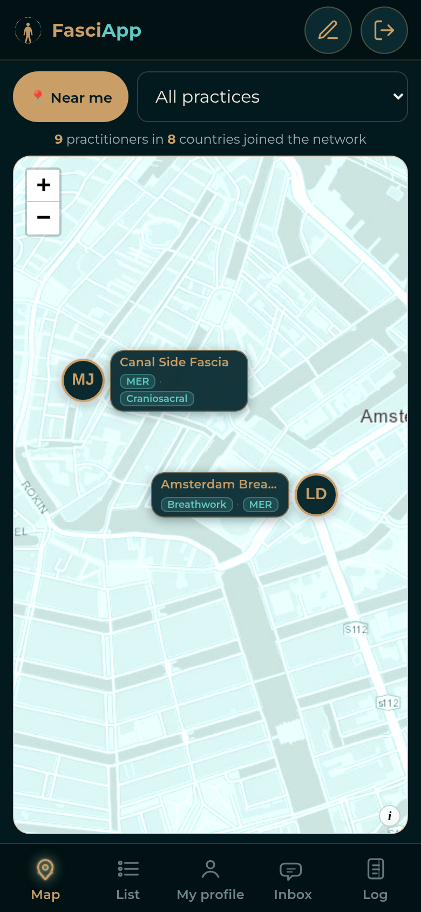
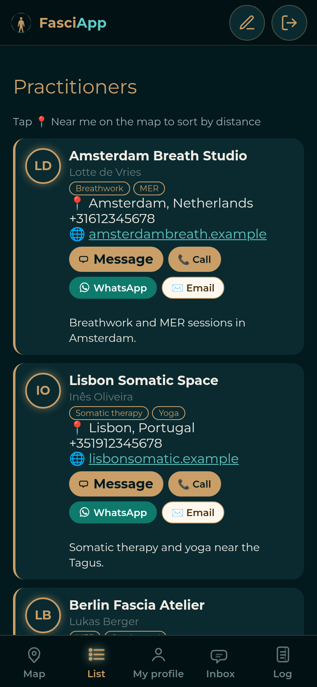
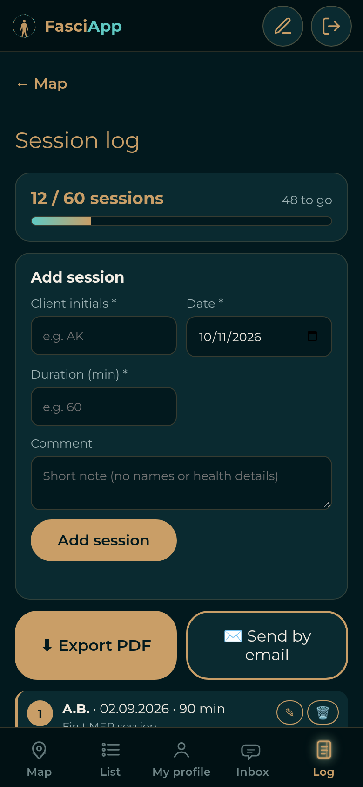
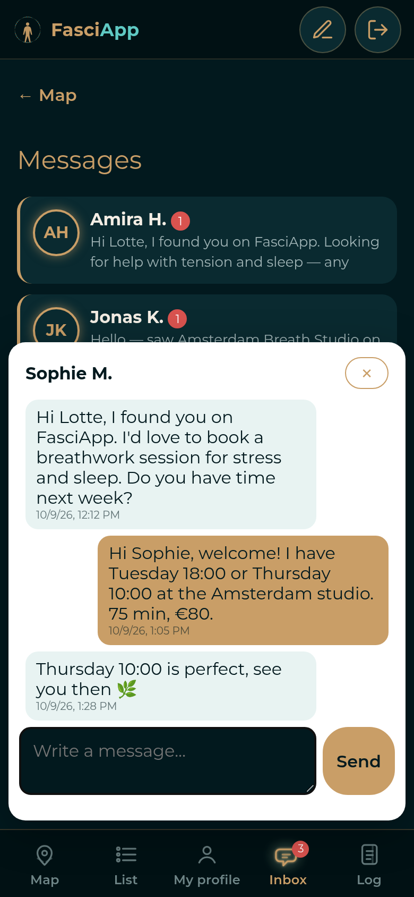

FasciApp
Connected like fascia. Found by those who need you.
Find bodywork & breathwork practitioners near you — myofascial release (MER), BBTRS, craniosacral, somatic therapy, massage and trauma-informed care. Open to every school — add yourself for free, message clients, and log training sessions.
Find a bodywork or breathwork practitioner near me — MER, BBTRS, craniosacral, somatic therapy and massage — then call, WhatsApp or message in one tap.
Track your 60 training sessions with client initials, date, duration and notes. Export as PDF or send it by email.
Say hello to any practitioner right in FasciApp. Private messages with an inbox and unread alerts.
Body reading and fascial patterns to help plan each session.
Coherent breathing, guided unwinding and daily practice.
Looking for myofascial release, BBTRS, breathwork, craniosacral, somatic therapy, massage or yoga? Open FasciApp filtered by practice or city — trauma-informed practitioners near you.
Practices
MER · BBTRS · Breathwork · Craniosacral · Somatic therapy · Massage · Yoga
Cities
Tallinn · Amsterdam · Berlin · Lisbon · Barcelona · Copenhagen · Vienna · Athens





FasciApp works in the browser and can be added to your home screen like a normal app, with no app store needed.
✓ FasciApp is installed. Open it from your home screen.